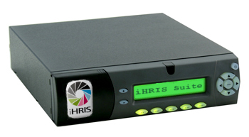

Installing on Mini-Box
These are installation notes for getting the mini-box [1] LCD appliance up and running with Ubuntu Server 32-bit 9.04 (Jaunty) wth an processor and making use of the menuing [2] system.
This document covers installation of Ubuntu and the bits of software to control the LCD Panel on the iHRIS Appliance. For information on installing the iHRIS Suite itself (including a full LAMP stack) see Installing the Debian Packages


<videoflash>6h79JeTiSQg</videoflash>
Ubuntu
Although we will intend to run this box without a monitor for the moment we will plug in the monitor to install Ubuntu from a USB-CDROM. Make sure the BIOS is configured to boot from the CD-ROM. Also, under Peripheral Devices you will need to enable all legacy support (or it will hang on installation).
For a flash drive, apparently Josh [3] has had some success following these directions [4].
We will do a Software Raid [5]. Warning: do not create the filesystem as ext4 as it will hurt mysql very badly [6]. Once it has been setup, we need to monitor [7] it using mdadm:
To do this:
sudo dpkg-reconfigure mdadm
Please enter the following:
Yes: periodic, monthly checks of the array
Yes: MD monitoring daemon
someone@somwhere.org: Email address for monitoring
Yes: Start with degraded array
Mail Server
We don't want our box to be the general mail server for the network. There is a mail server, postfix, installed by default on Ubuntu We will want to set the mail server to relay email to some other place.
First we need to do:
sudo apt-get install postfix
Then select
Satellite System //the type of system
somewhere.org //the name of your organization
smtp.somewhere.org //your smtp server to relay mail to
The above assumes that smtp.somewhere.org is an open relay which is probably not the case.
You will probably need to set Postfix up for SMTP Auth [8]
As an alternative here are some instructions for forwarding to a gmail accout [9].
USBLCD Reader
First create a user 'lcdmenu' that can't login:
sudo adduser --disabled-login --gecos "" lcdmenu
Download and build the SDK [10] or at least just what it includes usblcd-src [11]. Install 'usbread' into the /home/lcdmenu/bin. To build it you will need to do this:
sudo apt-get install autoconf gcc-4.1-base gcc-4.1 gcc make \
automake binutils binutils-dev libtool libusb-dev \
libhid-dev bzr
cd ~lcdmenu
sudo -u lcdmenu bzr branch lp:lcdmenu bin
cd ~/
wget http://www.mini-itx.com/store/information/usblcd/usblcd-src-0.1.4.tgz
tar -xzvf usblcd-src-0.1.4.tgz
cd usblcd-0.1.4
rm src/Makefile.am lib/usblcd.c
ln -s ~lcdmenu/bin/usblcd.c lib/usblcd.c
ln -s ~lcdmenu/bin/Makefile.am src/Makefile.am
ln -s ~lcdmenu/bin/lcdmenu.c src/lcdmenu.c
./autogen.sh
./configure
sudo make install
sudo ldconfig
Now we want to change the splash the screen at boot-up
sudo usblcd splash ~lcdmenu/bin/splash.txt
LCD Menu
This applies to LCD Menu 1.0 [12] which is not packaged yet. You have already downloaded it via bzr in the step above
Now edit the "sudoers" file by running:
sudo visudo
and add this line to grant the lcdmenu user limited access to system functions
%lcdmenu ALL=NOPASSWD: /sbin/shutdown, /usr/sbin/service,
/usr/bin/mysqldump, /usr/bin/apt-get, /usr/local/bin/usblcd,
/usr/local/bin/lcdmenu, /usr/bin/killall
Create a "backup" user in mysql with localhost only access and no password which can lock and select all tables
mysql -u root -p
mysql> GRANT SELECT,LOCK TABLES on *.* TO backup@localhost IDENTIFIED BY PASSWORD \'\';
mysql> quit;
(again no slashes)
Now we want it to setup to run periodically:
echo '* * * * * /home/lcdmenu/bin/lcdmenu_check.sh >/dev/null 2>&1'|\
sudo crontab -u lcdmenu -
We can get it up and running as fast as possible and put it a shutdown mesages by putting it in the local startup [13]:
sudo vi /etc/init.d/local
Add these contents:
#!/bin/sh
case "$1" in
start)
sudo -u lcdmenu /home/lcdmenu/bin/lcdmenu_check.sh
;;
stop)
run=`ps a -Ulcdmenu | grep /home/lcdmenu/bin/lcdmenu.php | grep -v grep | cut -c1-5 | paste -s -`
if [ "$run" ]; then
kill -15 $run
fi;
run=`ps a -Ulcdmenu | grep /home/lcdmenu/bin/lcdmenu.php | grep -v grep | cut -c1-5 | paste -s -`
if [ "$run" ]; then
sleep 0.3
kill -9 $run
fi;
killall lcdmenu
/usr/local/bin/usblcd clear backlight 1 text 0 0 " Shutting Down " text 1 0 " Please Wait "
;;
esac
Now do:
sudo chmod +x /etc/init.d/local
sudo update-rc.d local defaults 99
GDM
In case you have GDM installed, let us have it not boot on startup. Note, you can now turn gdm on/off via the LCD Menu.
sudo update-rc.d -f gdm remove
Automount
The LCD Menuing system has a "backup MySQL database to a flash drive" feature. Since we will not be using GNOME, we will need a USB automounter:
sudo apt-get install usbmount
Then edit the file /etc/usbmount/usbmount.conf and add "vfat" to the FILESYSTEMS e.g:
FILESYSTEMS="ext2 ext3 vfat"
then make sure the FS_MOUNTOPTIONS line has at least:
FS_MOUNTOPTIONS="-fstype=vfat,gid=lcdmenu,dmask=0007,fmask=0117"
Power Button
Make sure acpid is installed and running and change /etc/acpi/powerbtn.sh to suit your needs. I suggest you just make it the following:
test -f /var/lock/acpisleep && exit 0
/sbin/shutdown -h now "Power button pressed"
UPS
Install nut and follow these directions [14] as well as whatever is available on the home page [15] of the nut package. nut is built for network access to a UPS but seems to be the most up-to-date package available.
Network Status
The MAC Address, to configure your router, can be obtained from the LCD Menu:
>F1:Server Status
>F2:Network Status
>F3:MAC Address
Similarly, if you have plugged the server into a network with DHCP, you can get the IP Address:
>F1:Server Status
>F2:Network Status
>F3:MAC Address
Webmin
See this webmin installation guide [16] or just cut and paste:
sudo aptitude install perl libnet-ssleay-perl openssl \
libauthen-pam-perl libpam-runtime libio-pty-perl libmd5-perl
wget http://garr.dl.sourceforge.net/sourceforge/webadmin/webmin_1.500_all.deb
sudo dpkg -i webmin_1.500_all.deb
Browse to:
https://your-server-ip:10000/
and login as the user you created on Ubuntu installation.
References
[1] http://www.mini-box.com/M200-LCD-Enclosure?sc=8&category=87 [2] https://launchpad.net/lcdmenu [3] http://suereth.blogspot.com/2008/03/my-new-toy-installing-ubuntu.html [4] http://edoceo.com/liber/ubuntu-live-usb [5] http://advosys.ca/viewpoints/2007/04/setting-up-software-raid-in-ubuntu-server/ [6] http://ubuntuforums.org/showthread.php?t=1313834 [7] http://ubuntuforums.org/showthread.php?t=237582 [8] http://postfix.state-of-mind.de/patrick.koetter/smtpauth/smtp_auth_mailservers.html [9] http://ubuntu-tutorials.com/tag/relayhost/ [10] http://resources.mini-box.com/online/picoLCD%2020x2%20(OEM)/Software/Linux/SDKSource/picoLCD20x2-SDK-0.1.7.tgz [11] http://www.mini-itx.com/store/information/usblcd/usblcd-src-0.1.4.tgz [12] https://code.launchpad.net/~intrahealth+informatics/lcdmenu/dev-1.0 [13] https://help.ubuntu.com/community/RcLocalHowto [14] http://www.crn.com/white-box/199000818 [15] http://www.networkupstools.org/ [16] http://www.ubuntugeek.com/ubuntu-serverinstall-gui-and-webmin-in-ubuntu-810-intrepid-ibex-guide.html
Source
iHRIS wiki, revision 11564; contributors: Litlfred, MarkAHershberger. Pages 448–452 of the 2010-09-17 export (sha256 958d9bf5360f2859…). GNU FDL 1.2.